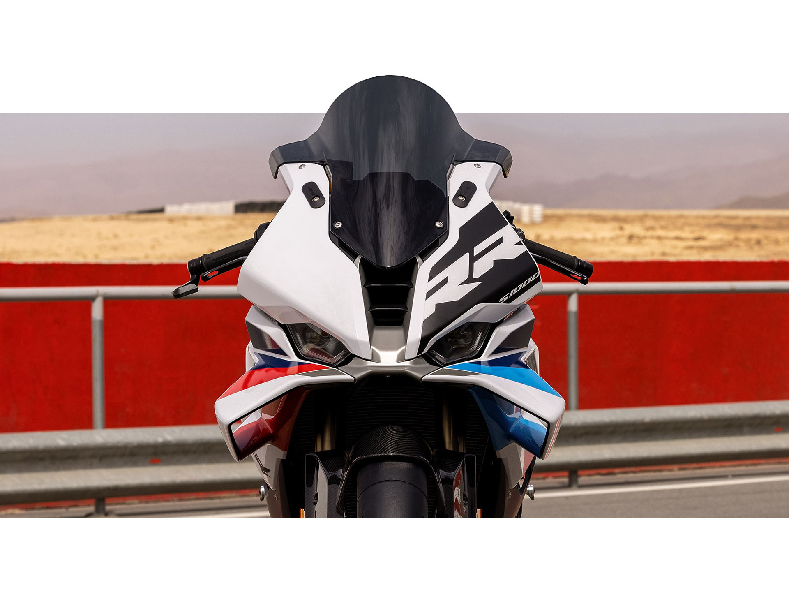

bikes
1000
bikes
1000
Off to the pit lane after a few laps around the racetrack: The last screen used is always displayed after you switch the ignition off/on. This helps you concentrate and stay focused on your mode. One Pure Ride screen and three different Core screens are available depending on your preference. The system displays a suitable maximum speed when the engine is cold. The shift light now clearly indicates when the rotational-speed sensor is flashing. Thanks to the clear TFT display, you can quickly view all other settings as well.
(1).jpg)

You can achieve new personal bests with the more aerodynamic front and side trim panels. The new winglets generate up to 37% more downforce on the road: with 13 lbs at 93 mph, 23 lbs at 124 mph, 35 lbs at 155 mph, and a whopping 50 lbs at 186 mph. This counteracts the tendency of the front wheel to lift off the road surface when accelerating.